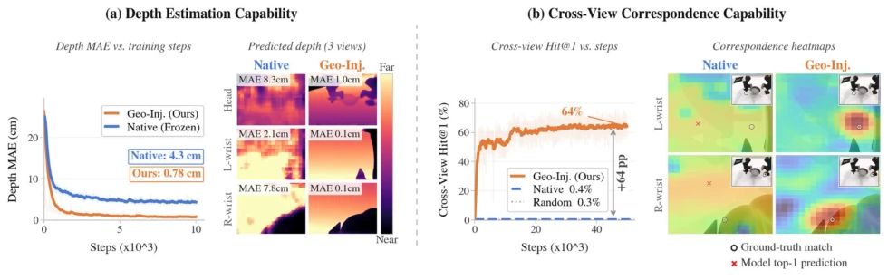
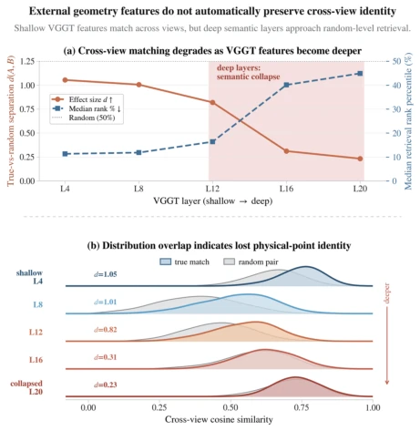
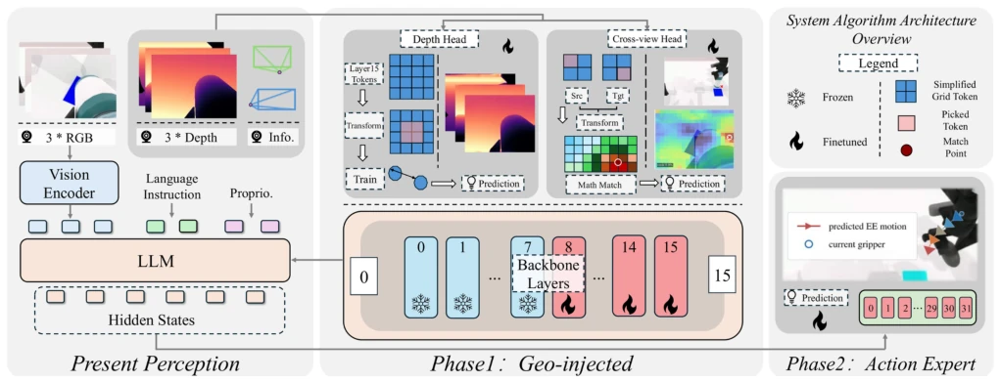
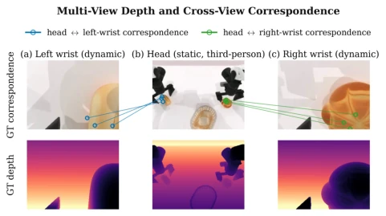
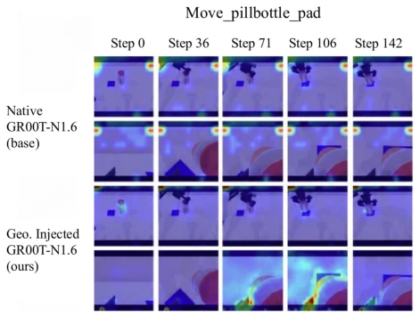
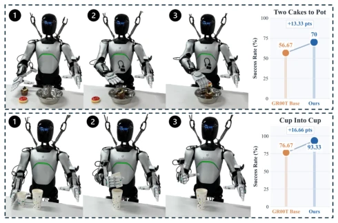

现有 VLA 模型（如 GR00T, OpenVLA）在单视角下表现尚可，但多视角接触任务（contact-rich tasks）常因遮挡失效。现有方法多简单拼接视图（Zhao et al. 2023; Ghosh et al. 2024），导致隐藏状态缺乏度量和跨视角一致性。El Banani et al. (2024) 指出视觉基础模型在不同视角下对同一表面的表征不一致，导致跨视角检索近乎随机。虽然 Spatial Forcing (Li et al. 2026) 等尝试注入几何先验，但往往无法同时保证度量和对应关系，且可能修改推理图。本文旨在解决这两个痛点：让 VLA 的 action-facing tokens 同时具备可恢复的 metric depth 和 same-world-point consistency，且不影响部署架构，实现真正的 RGB-only 部署。
—

Figure 2: Geometry-injection diagnostics. (a) With the same depth-head probe, metric depth is difficult to extract from the native backbone (4.3 cm MAE) but becomes readily recoverable after geometry injection (0.78 cm); the panels show per-view MAE for one frame. (b) Native tokens yield near-random cross-view retrieval (0.4% Hit@1 versus 0.3% random), indicating weak same-world-point consistency, whereas geometry injection reaches 64% and localizes the projected target. Together, metric depth and cross-view token consistency—two prerequisites for constructing a multi-camera field—become accessible in the backbone.

Figure 5: Layer-wise VGGT diagnostic. Shallow features pre- serve cross-view token identity, whereas deeper features ap- proach random retrieval after global attention mixing. Larger d(A, B) and lower median rank percentile are better.
Figure 1: Overview of Multi-View Unified Camera Fields. Calibrated head-and-wrist views provide complementary observations; training-time depth and reprojection supervision reshape action-facing tokens, while deployment remains RGB-only with the native inference graph.

Figure 3: System architecture of the proposed Multi-View Unified Camera Fields framework. During geometry injection, the backbone receives multi-camera RGB observations and layers 8–15 are updated by coordinate-based depth and cross-view matching objectives read from the layer-15 hidden grid. After injection, both heads are removed and the action head is trained on the geometry-injected hidden states, preserving the original inference structure.

Figure 4: Cross-view target construction. Depth lifts a source pixel to 3D, calibrated poses reproject the same point, and the exact backbone preprocessing maps the accepted raw pixel to its positive token center.
Figure 6: Full-evaluation diagnostics. Unlike the single-frame per-view visualization in Figure 2, the results here report full- evaluation mean depth MAE. Geometry injection separates true cross-view matches, localizes projected correspondences, reduces mean depth MAE from 4.9 to 0.44 cm, and raises predictions within 2 cm from 44% to 97%.

Figure 7: Action-to-image cross-attention for move_pillbottle_pad at matched rollout steps. Independent normalization highlights the spatial support within each panel; the comparison concerns localization rather than absolute attention magnitude. Attention extrac- tion details are provided in Appendix E.

Figure 8: Real-robot RGB-only pilot on Agibot Expedition A2 (30 trials/policy/task); inference uses no geometry or auxiliary head.